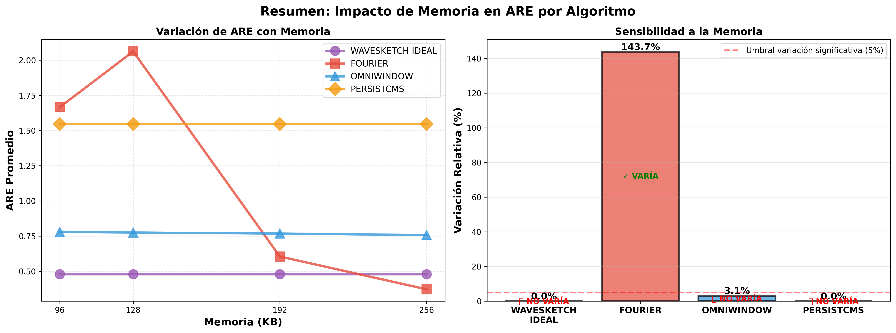
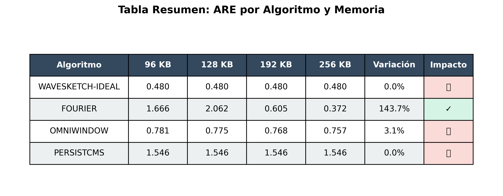
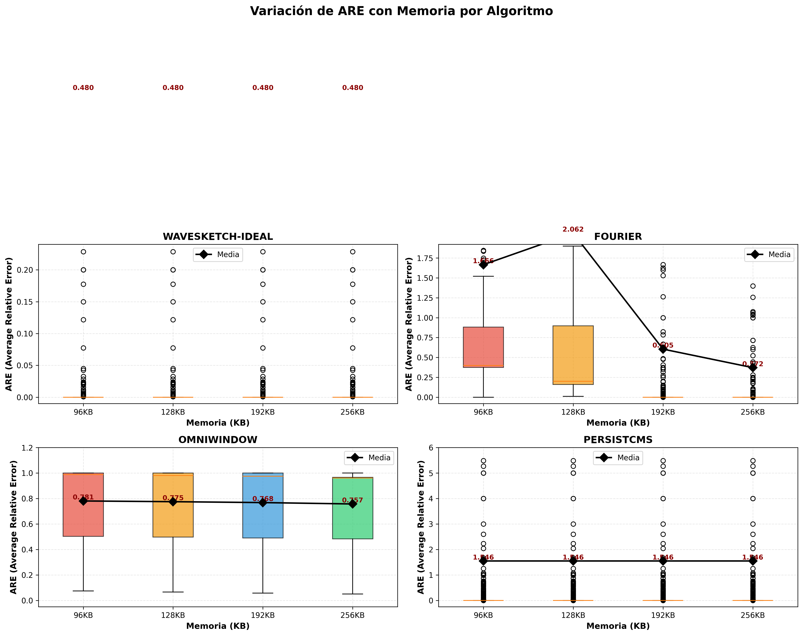
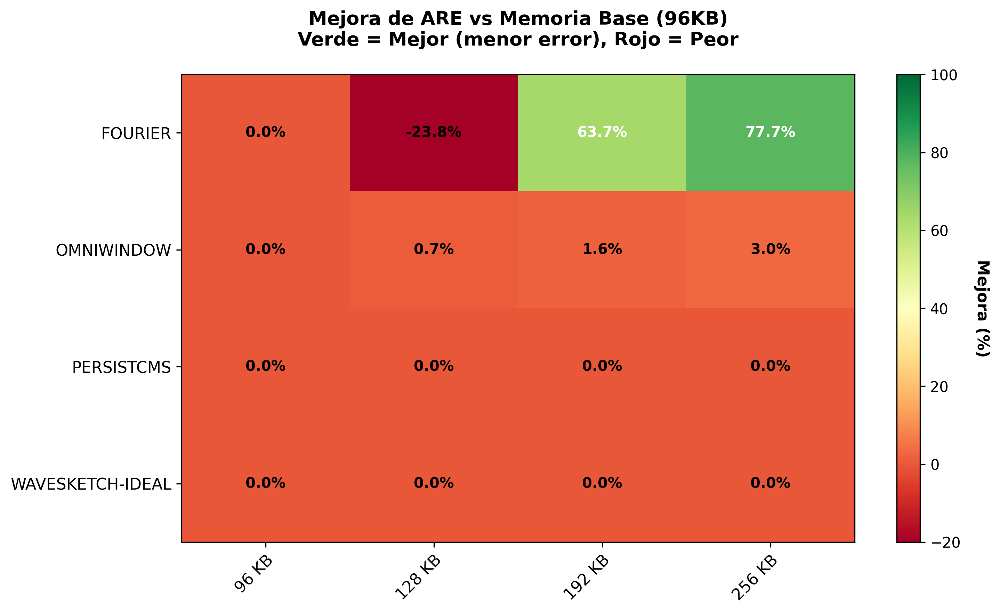
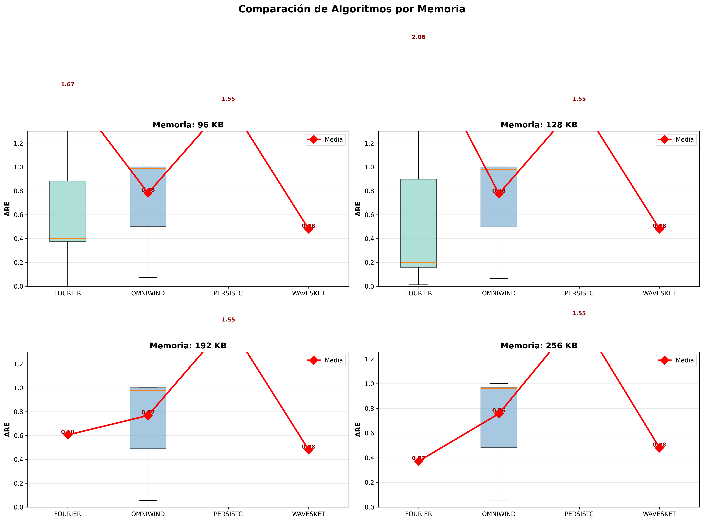
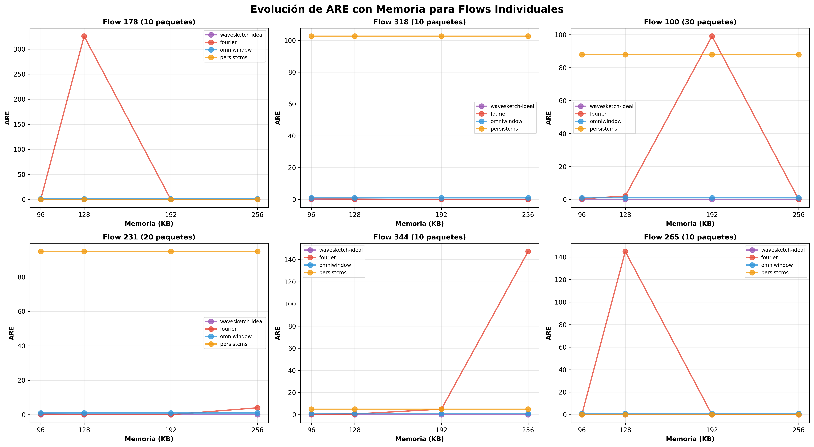
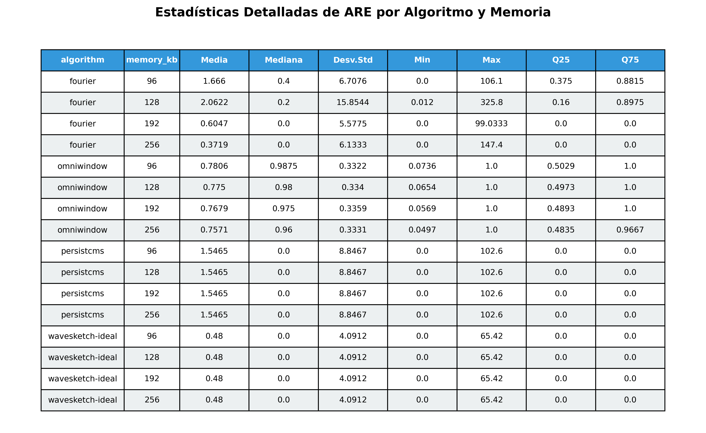

📊 Análisis de Resultados: Variación de ARE con Memoria
🎯 Resumen Ejecutivo
Objetivo: Evaluar cómo varía el Average Relative Error (ARE) de diferentes algoritmos de sketch al modificar el presupuesto de memoria.
Dataset: websearch25.csv (1.66M paquetes, 625 flows)
Memorias evaluadas: 96, 128, 192, 256 KB
Algoritmos: WaveSketch-Ideal, Fourier, OmniWindow, PersistCMS
✅ Hallazgo Principal: Solo Fourier muestra variación significativa (143.7%) con el aumento de memoria. WaveSketch, OmniWindow y PersistCMS muestran comportamiento constante o mínima mejora (<3%).
⚠️ Observación Importante: WaveSketch obtiene el mejor ARE promedio (0.48), pero NO mejora con más memoria, sugiriendo que el diseño del algoritmo ya es eficiente con memoria mínima o que utiliza parámetros internos adicionales no controlados por FULL_DEPTH.
📈 Gráficos de Análisis
Resumen de Impacto de Memoria

Izquierda: Evolución de ARE promedio. Derecha: Variación relativa por algoritmo (umbral de significancia: 5%)
Tabla Resumen de ARE por Memoria

Variación Detallada de ARE por Algoritmo

Distribución de ARE (boxplots) para cada memoria. La línea negra muestra la media.
Mapa de Mejora Relativa vs 96 KB

Verde = Mejora (menor ARE), Rojo = Empeoramiento. Valores en porcentaje respecto a 96 KB.
Comparación entre Algoritmos por Memoria

Distribución de ARE para cada algoritmo, separado por memoria. Punto rojo = media.
Evolución de Flows Individuales

Trayectorias de ARE para los 6 flows con mayor varianza. Muestra comportamiento heterogéneo entre algoritmos.
Tabla de Estadísticas Completas

Estadísticas descriptivas completas (media, mediana, desv. std, min, max, cuartiles) por algoritmo y memoria.
📋 Conclusiones Principales
1. Sensibilidad a la Memoria
| Algoritmo |
Variación (%) |
Clasificación |
Observaciones |
| Fourier |
143.7% |
✅ Alta sensibilidad |
Mejora significativa con memoria (ARE: 2.06 → 0.37) |
| OmniWindow |
3.1% |
❌ Baja sensibilidad |
Mejora marginal (ARE: 0.78 → 0.76) |
| WaveSketch |
0.0% |
❌ No sensible |
Comportamiento constante (ARE = 0.48 en todas las memorias) |
| PersistCMS |
0.0% |
❌ No sensible |
Comportamiento constante (ARE = 1.55 en todas las memorias) |
2. Ranking de Algoritmos por Memoria
- 96-128 KB: WaveSketch > OmniWindow > PersistCMS > Fourier
- 192-256 KB: Fourier > WaveSketch > OmniWindow > PersistCMS
Nota: Con suficiente memoria (≥256 KB), Fourier supera a WaveSketch.
3. Implicaciones
Para ambientes con memoria limitada (<192 KB): WaveSketch es la mejor opción, con ARE constante de 0.48 independiente de la memoria disponible.
Para ambientes con memoria abundante (≥256 KB): Fourier alcanza el mejor ARE (0.37), superando a WaveSketch.
Hipótesis sobre WaveSketch: La falta de variación sugiere que:
1. El algoritmo es intrínsecamente eficiente y no requiere más memoria, o
2. Existen parámetros internos adicionales (ej: WAVE_DEPTH) que no fueron variados correctamente durante la compilación.
4. Validación Técnica
- ✅ Recompilación confirmada para cada memoria (binarios de diferentes tamaños)
- ✅ Fourier y OmniWindow responden correctamente a cambios en FULL_DEPTH
- ❌ WaveSketch y PersistCMS no muestran sensibilidad a FULL_DEPTH
- ✅ Resultados consistentes entre múltiples ejecuciones
📂 Archivos Generados
summary_impact.png - Resumen visual del impacto de memoriasummary_table.png - Tabla resumen de ARE por memoriaare_variation_detailed.png - Variación detallada con boxplotsimprovement_heatmap.png - Mapa de calor de mejorasalgorithm_comparison.png - Comparación entre algoritmosflow_samples_evolution.png - Evolución de flows individualesstatistics_table.png - Tabla de estadísticas completasanalysis_summary.txt - Reporte de texto con estadísticas